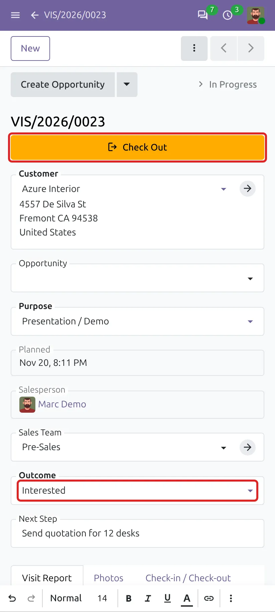
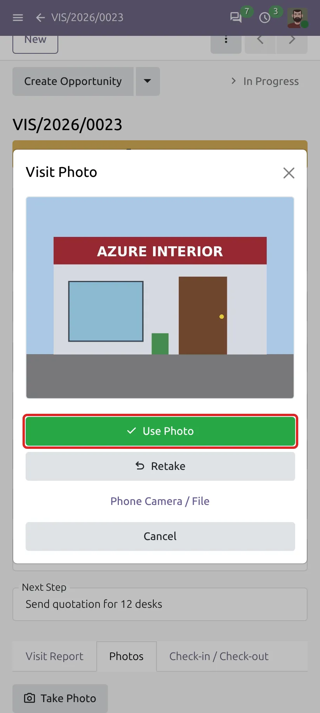
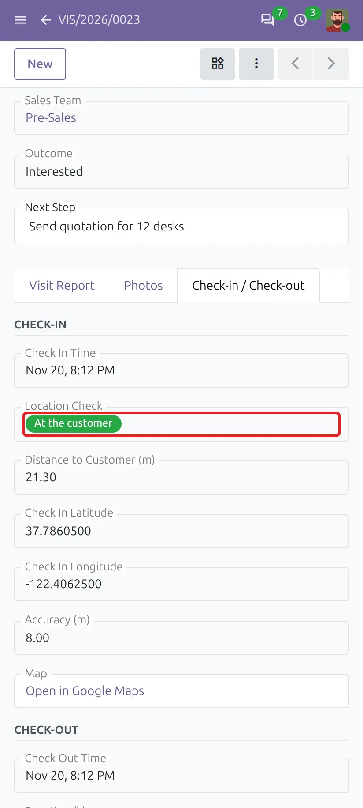
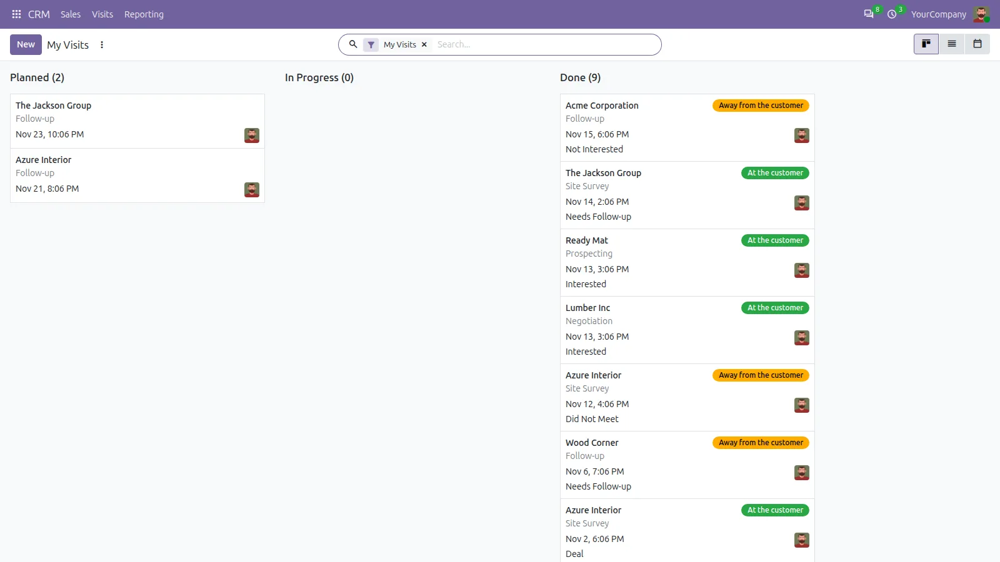
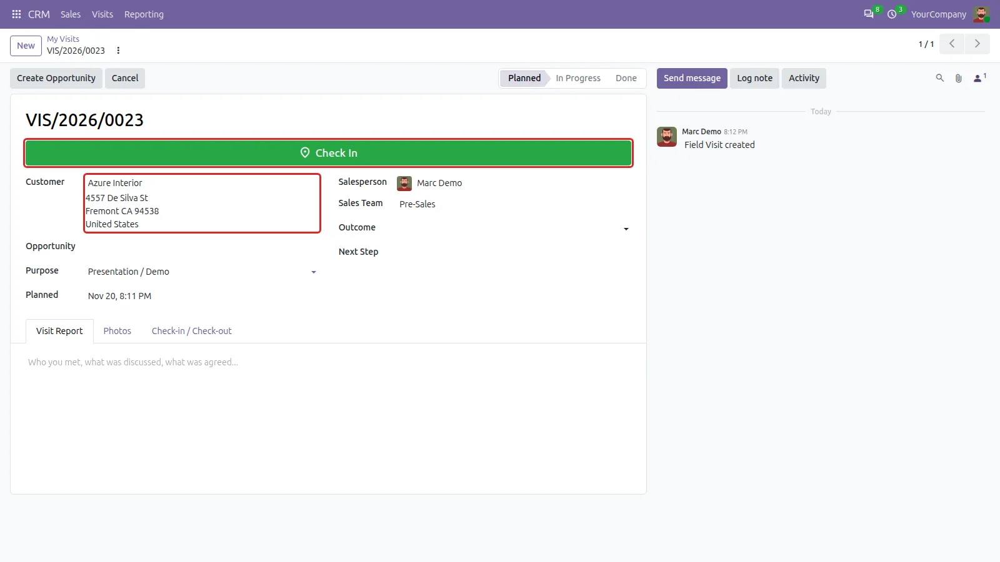
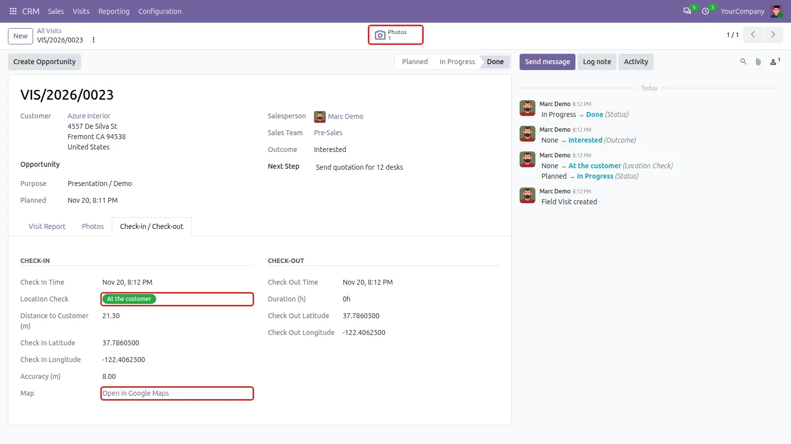
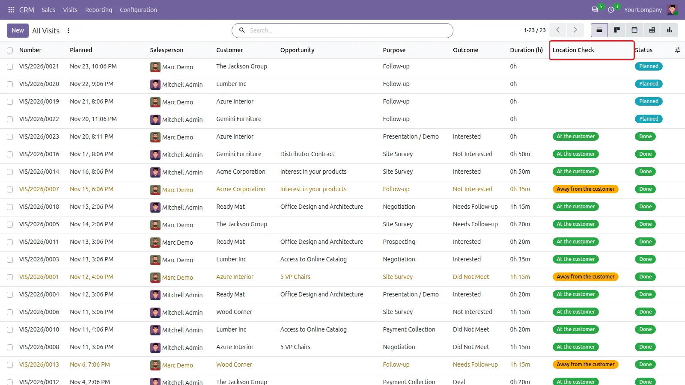
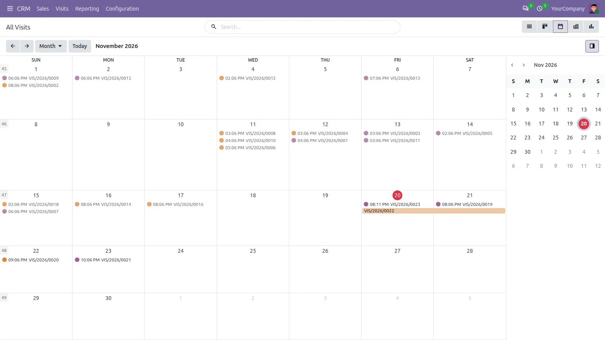
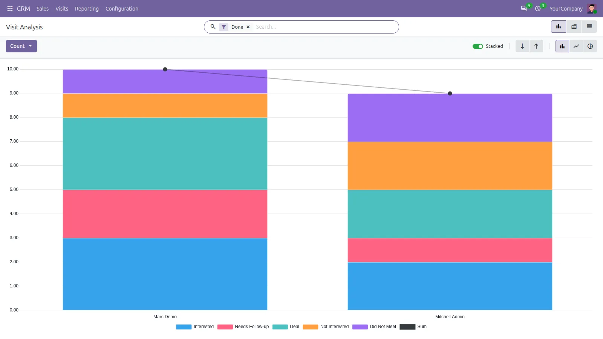
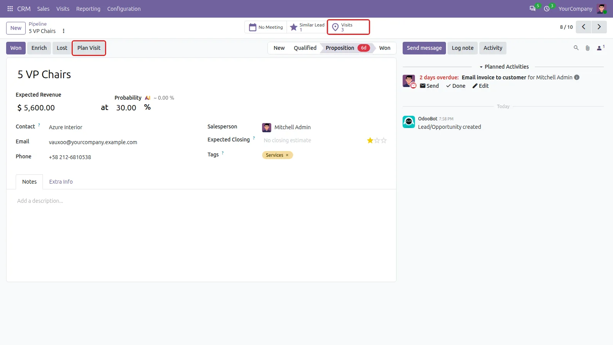

Field Visit - Sales Visit and Customer Visit with GPS
Plan each sales visit and customer visit, check in and out from the phone with GPS and photos, and see every field visit on the opportunity and customer.
- Price
- $49
- Odoo versions
- 17.0
- 18.0
- 19.0
- 20.0
- Technical name
tamadoo_field_visit- License
- OPL-1

Text and screenshots below are from the Odoo 20.0 version of this module.
Salespeople plan their customer visits and check in and out from the phone. Odoo records the time, the GPS position compared with the customer's address, photos, the report and the outcome, on the opportunity and the customer.
At the customer, from the phone
Works in the phone browser and in the Odoo mobile app.



Why sales managers want it
Verified location
The check-in position is compared on the server with the customer's coordinates; visits away from the customer are flagged.
Time on site
Check-in and check-out times give the real duration of every visit.
Photos and report
Photos from the phone camera, the visit report, the outcome and the next step.
Part of CRM
Visits on the opportunity and the customer, Create Opportunity from a visit, last visit date and a Not Visited in 30 Days filter.
Plan the week
Calendar, kanban and list per salesperson and team.
Right visibility
Salespeople see their own visits, sales managers see everyone's.
Step by step
Each salesperson's visit board
Planned, in progress and done visits with the location check of every visit.

Plan a visit
Customer (with address), opportunity, purpose and date. At the customer, one tap on Check In.

What the manager sees
Check-in and check-out times, duration, GPS position, distance to the customer, a Google Maps link, the report and the photos.

All visits
Visits away from the customer stand out; filter by salesperson, team, purpose, outcome or day.

Calendar
Plan the week per salesperson.

Analysis
Visits per salesperson and outcome; pivot by team, purpose or customer.

On the opportunity
A Visits smart button, Plan Visit, the last visit date and a Not Visited in 30 Days filter in the pipeline.

Set up in 2 minutes
- CRM → Configuration → Settings → Field Visits: set the check-in radius and whether a photo is required.
- Geolocate your customers (latitude / longitude on the contact, e.g. with the free Partners Geolocation module).
- Salespeople open CRM → Visits → My Visits on their phone.
Requirements: Odoo 20.0, depends on crm. Phones need HTTPS for location and camera access.
Get Field Visit
Questions before buying? Write to tama.odoo@gmail.com.